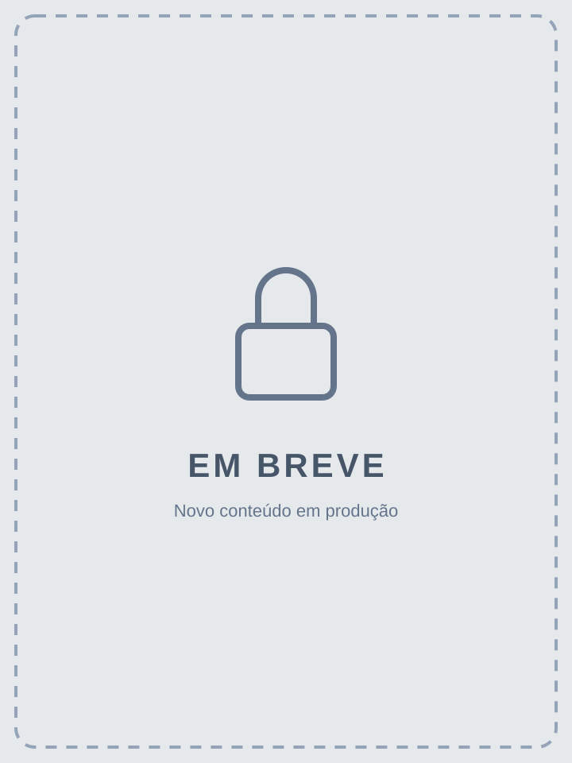

Guia Prático para quem vive com menos tempo, mais resultado
O guia direto ao ponto para emagrecer de verdade — mesmo com a agenda mais lotada do mundo.
Aqui você encontra conteúdos sobre nutrição, exercício físico e saúde escritos por um nutricionista — e, se preferir um acompanhamento individual, também atendo pacientes de forma online.
Estou desenvolvendo novos guias práticos sobre nutrição, treino e hábitos saudáveis. Este catálogo será atualizado conforme novos materiais forem lançados.
O guia direto ao ponto para emagrecer de verdade — mesmo com a agenda mais lotada do mundo.

Mais um conteúdo prático sobre nutrição e treino está a caminho.
Mais um conteúdo prático sobre nutrição e treino está a caminho.
Existe muita informação contraditória sobre nutrição e treino circulando na internet e nas redes sociais
Pouco tempo no dia a dia dificulta cozinhar, treinar e planejar as refeições com calma
Mudanças muito radicais costumam ser difíceis de manter a longo prazo
Muitas vezes falta entender o motivo por trás de cada orientação alimentar
Muitas pessoas encontram dificuldade porque recebem informações contraditórias, têm pouco tempo no dia a dia e acabam não conseguindo transformar conhecimento em hábitos consistentes. Foi pensando nisso que comecei a desenvolver meus guias práticos — o primeiro deles já está disponível.

Sou nutricionista (CRN-PR 19532) e bacharel em Educação Física, e passei anos atendendo pacientes e alunos dentro de clínicas e academias.
Trabalho com Prática Baseada em Evidência: ou seja, as orientações que você encontra aqui — seja num guia digital, seja num atendimento individual — são baseadas em ciência, não em modismo.
Nesse tempo, percebi o mesmo padrão se repetindo: as pessoas não precisavam de mais uma dieta da moda ou de um treino "milagroso" — precisavam de conteúdo simples, baseado em ciência, que coubesse na vida real delas.
Foi por isso que comecei a transformar esse conhecimento em guias práticos que qualquer pessoa possa consultar, no seu próprio ritmo. E para quem prefere um acompanhamento individual, também atendo pacientes de forma online.
Além dos guias digitais, também atendo pacientes de forma 100% online, com plano alimentar personalizado e acompanhamento contínuo — sempre com Prática Baseada em Evidência.
Você agenda sua consulta online, no dia e horário que forem melhores pra você.
Conversamos sobre seu histórico, rotina, objetivos e preferências alimentares.
Você recebe uma orientação nutricional individualizada, feita sob medida para você.
Retornos periódicos para ajustar o plano e acompanhar sua evolução.
O guia direto ao ponto para emagrecer de verdade — mesmo com a agenda mais lotada do mundo.
Quero adquirir agoraEntenda em poucos minutos onde a sua rotina está dificultando sua alimentação.
Foque no que gera mais impacto quando o tempo disponível é curto.
Opções rápidas de montar, sem depender de preparo longo ou complicado.
Protocolos curtos de treino para dias cheios, em casa ou na academia.
O que costuma sabotar o progresso de quem vive com a agenda lotada.
Um passo a passo simples para você aplicar hoje mesmo, sem complicação.
"Depois de anos recebendo informações contraditórias, esse guia foi o primeiro material que me ajudou a entender minha alimentação de forma clara."
"Consegui aplicar mesmo com a rotina corrida, sem precisar de muito tempo para organizar as refeições."
"O que mais gostei foi entender o motivo por trás de cada orientação. Não é uma dieta pronta, é conhecimento que eu levo para o dia a dia."
Acesso imediato após a confirmação da compra. Leia no celular, tablet ou computador.
Conforme o Código de Defesa do Consumidor e a política da plataforma de pagamento, você tem até 7 dias após a compra para solicitar reembolso integral.
Logo após a confirmação do pagamento, você recebe o link de acesso por e-mail para baixar o material em PDF. É só abrir no celular, tablet ou computador.
Sim. Esse guia foi desenvolvido justamente para rotinas corridas, com orientações diretas e rápidas de aplicar.
Sim! O conteúdo foi pensado justamente para quem está começando agora e se sente perdido com tanta informação contraditória.
Você tem 7 dias de garantia, conforme o Código de Defesa do Consumidor. Se não fizer sentido pra você, devolvemos 100% do valor pago.
Não. O material tem finalidade exclusivamente educativa e não substitui diagnóstico, prescrição individualizada ou acompanhamento profissional. Consulte um nutricionista ou educador físico sempre que necessário.
Sim. Este é o primeiro de uma série de guias práticos que estou desenvolvendo. Novos materiais serão adicionados ao catálogo conforme forem lançados.
Novos conteúdos serão adicionados aqui conforme forem lançados. Garanta agora o Guia Prático para quem vive com menos tempo, mais resultado.
Quero o guia agora